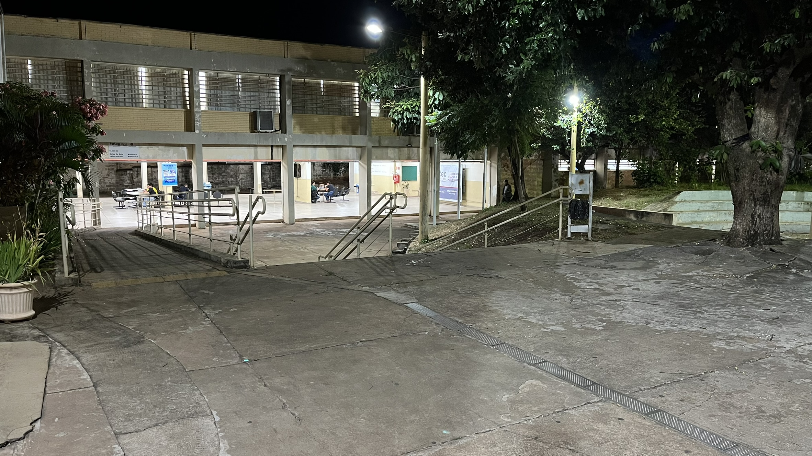

Olá!
Boas vindas ao meu blog pessoal! É um prazer ter você por aqui.
Quem sou eu e para onde estou indo
ㅤㅤOi, que bom te ver por aqui! Eu sou o João Guilherme, tenho 18 anos e sou movido por um interesse genuíno pela tecnologia. Atualmente, estou mergulhando de cabeça em Sistemas para Internet, um universo que, para mim, vai muito além das salas de aula. Este espaço é onde pretendo compartilhar os aprendizados e as descobertas dessa jornada em constante evolução.
ㅤㅤMinha jornada é movida pelo desejo de resolver problemas reais através da lógica da programação. Desde muito pequeno, me recordo de observar, fascinado, o meu avô e o meu tio diante dos computadores. Naquela época, a tecnologia era quase mágica pra mim. Ver aquelas telas iluminadas e ouvir o som ritmado dos teclados despertava em mim uma curiosidade que eu não sabia explicar, mas que sabia que queria seguir. Eles eram meus primeiros mentores, mesmo que sem saber, e eu passava horas tentando entender como tudo aquilo funcionava.
Objetivos de Carreira
ㅤㅤBusco oportunidades que me permitam aplicar meus conhecimentos em desenvolvimento web e suporte técnico. Acredito que a tecnologia deve ser um meio de facilitar a vida das pessoas. Com base técnica sólida em suporte e paixão pelo desenvolvimento web, meu objetivo é construir pontes entre sistemas complexos e soluções intuitivas.

ㅤㅤPara alcançar esses objetivos e consolidar minha atuação na área de tecnologia, foco no desenvolvimento das seguintes competências e áreas de interesse:
- Atuar em laboratórios de informática.
- Desenvolver interfaces modernas e acessíveis.
- Identificação e resolução de problemas.
Formação: Sistemas para Internet
ㅤㅤA Faculdade de Tecnologia Prof. José Camargo - Fatec Jales é uma instituição pública de ensino superior vinculada ao Centro Paula Souza, reconhecida por oferecer cursos tecnológicos voltados às demandas do mercado de trabalho. Localizada na cidade de Jales (SP), a Fatec tem como missão formar profissionais qualificados, com foco em inovação, tecnologia e desenvolvimento regional.

ㅤㅤO curso de Sistemas para Internet possui duração de 3 anos, com início em 2026 e previsão de conclusão em 2029. Durante a graduação, tenho explorado diversas áreas essenciais da tecnologia, desenvolvendo tanto habilidades técnicas quanto visão estratégica. Entre os principais focos estão:
- Desenvolvimento Full-Stack: criação de aplicações completas, atuando tanto no front-end quanto no back-end, utilizando tecnologias modernas para construção de sistemas web eficientes e escaláveis.
- Arquitetura de Redes: compreensão da estrutura e funcionamento de redes de computadores, incluindo protocolos, segurança e infraestrutura.
- User Experience (UX): estudo da experiência do usuário, com foco em criar interfaces intuitivas, acessíveis e centradas nas necessidades das pessoas.